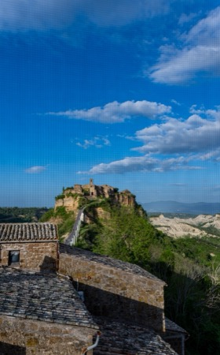
Civita di Bagnoregio (Lazio)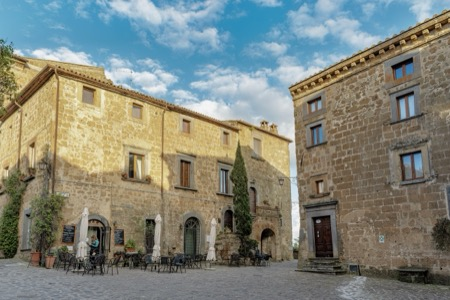
Civita di Bagnoregio (Lazio)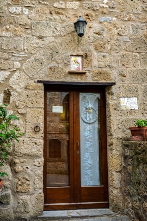
Civita di Bagnoregio (Lazio)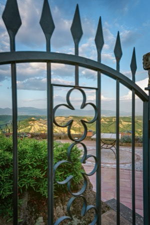
Civita di Bagnoregio (Lazio)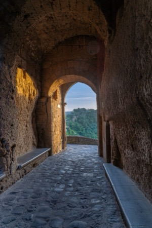
Civita di Bagnoregio (Lazio)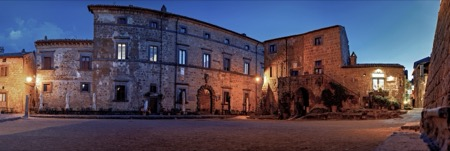
Civita di Bagnoregio (Lazio)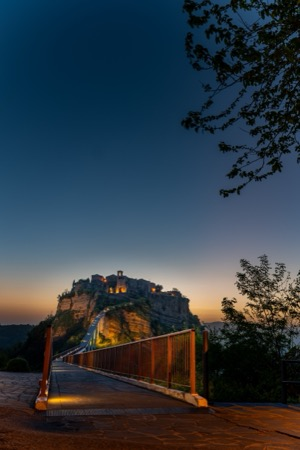
Civita di Bagnoregio (Lazio)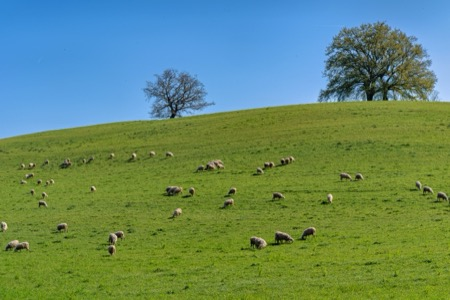
happy sheep, pecorino factory (Tuscany)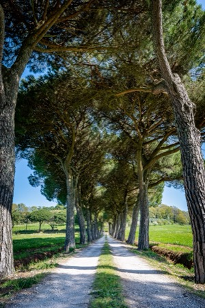
pine alley (Tuscany)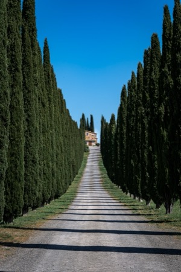
Poggio di Covili, Castiglione d'Orcia (Tuscany)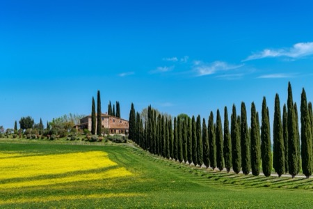
Poggio di Covili, Castiglione d'Orcia (Tuscany)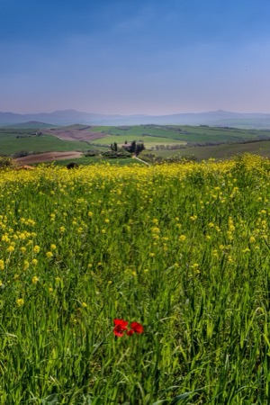
Podere Belvedere, San Quirico d'Orcia (Tuscany)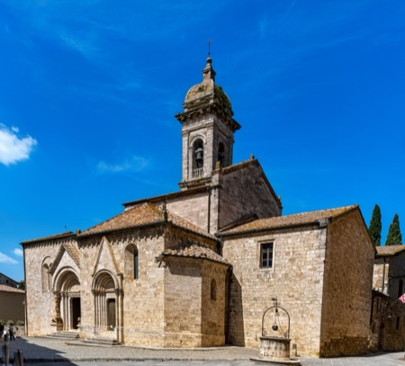
Parrocchia dei Santi Quirico e Giulitta, San Quirico d'Orcia (Tuscany)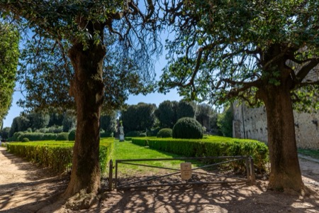
Horti Leonini, San Quirico d'Orcia (Tuscany)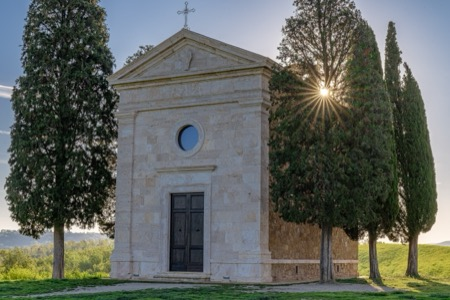
Cappella della Madonna di Vitaleta, San Quirico d'Orcia (Tuscany)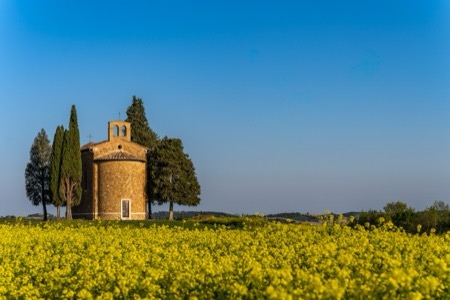
Cappella della Madonna di Vitaleta, San Quirico d'Orcia (Tuscany)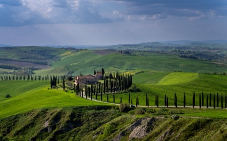
Podere Baccoleno, Asciano (Tuscany)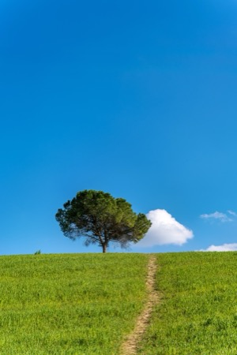
Asciano (Tuscany)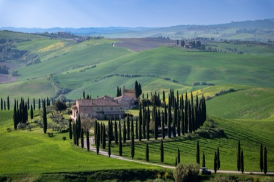
Podere Baccoleno, Asciano (Tuscany)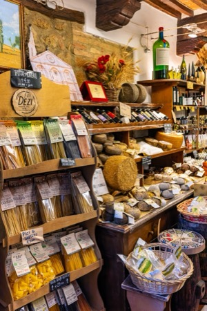
Pienza (Tuscany)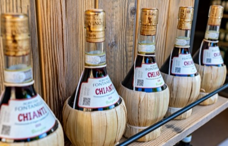
Pienza (Tuscany)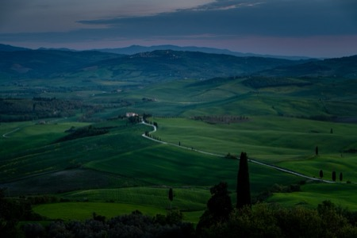
Podere Poggio Manzuoli, Pienza (Tuscany)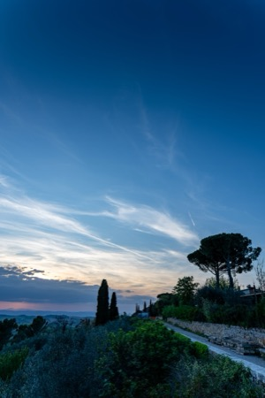
Pienza at sunset (Tuscany)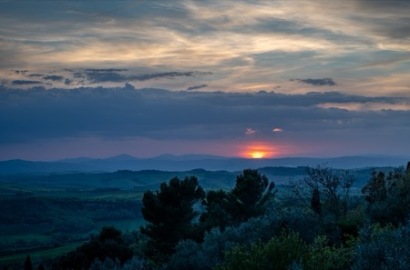
sunset, Pienza (Tuscany)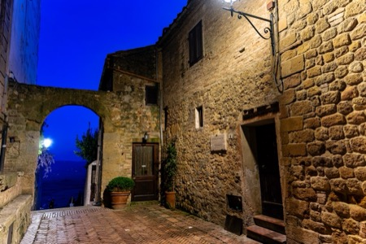
Pienza at night (Tuscany)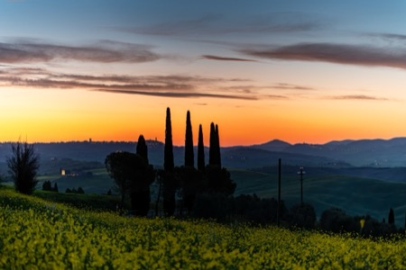
sunrise, San Quirico d'Orcia (Tuscany)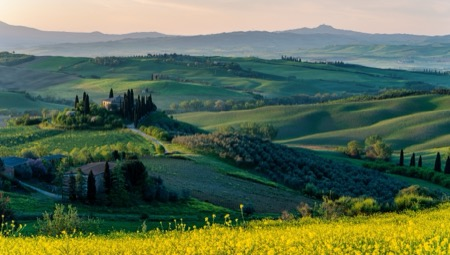
Podere Belvedere, San Quirico d'Orcia (Tuscany)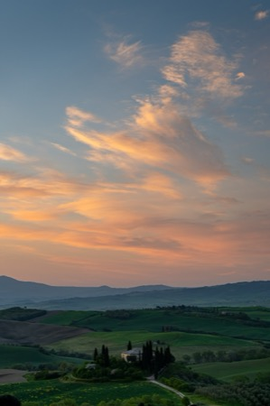
Podere Belvedere, San Quirico d'Orcia (Tuscany)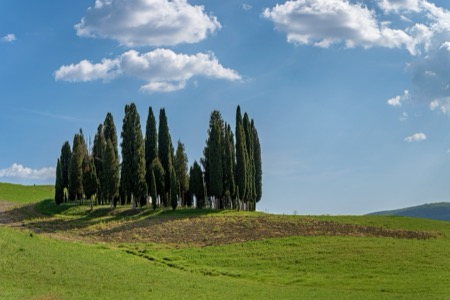
Cipressi di San Quirico d'Orcia (Tuscany)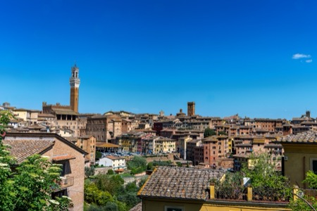
cityscape, Siena (Tuscany)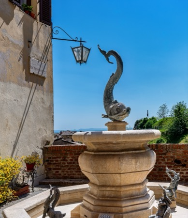
Fontanina di contrada, Siena (Tuscany)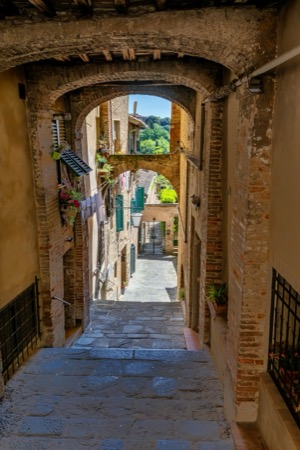
side street, Siena (Tuscany)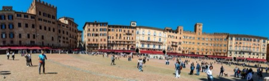
Il Campo, Siena (Tuscany)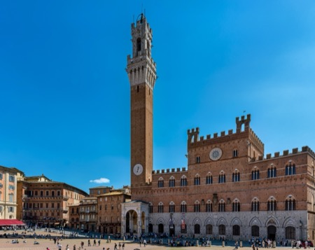
Il Campo, Palazza Pubblico, Siena (Tuscany)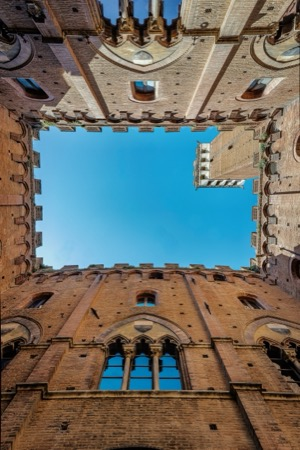
Palazzo Pubblico, Torre del Mangia, Siena (Tuscany)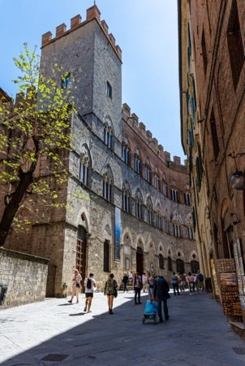
Via di Citta, Siena (Tuscany)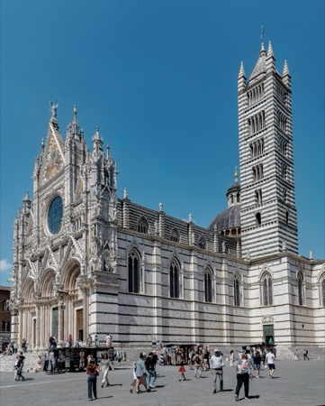
Il Duomo, Siena (Tuscany)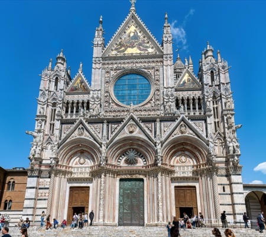
Il Duomo, Siena (Tuscany)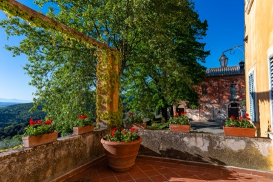
Montestigliano (Tuscany)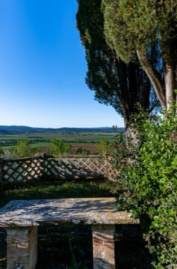
Montestigliano (Tuscany)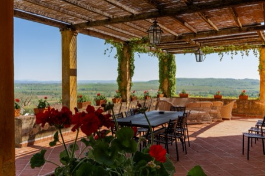
Montestigliano (Tuscany)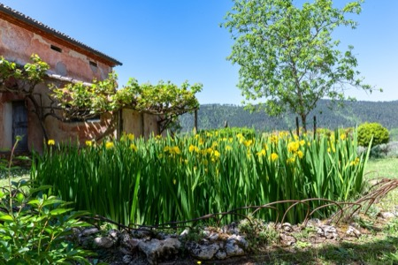
Montestigliano (Tuscany)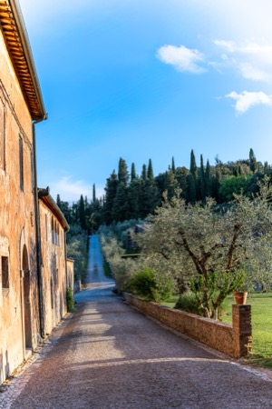
Montestigliano (Tuscany)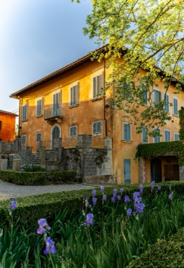
Montestigliano (Tuscany)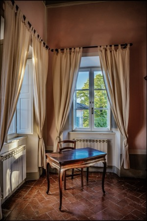
Villa Donati, Montestigliano (Tuscany)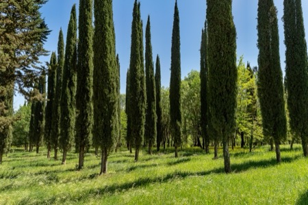
cipressi, Montestigliano (Tuscany)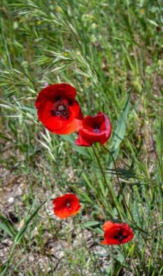
papaveri, Montestigliano (Tuscany)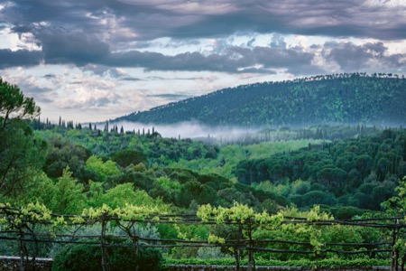
Montestigliano (Tuscany)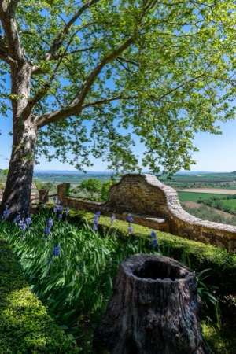
Montestigliano (Tuscany)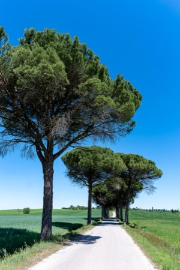
road to San Rocco a Pili (Tuscany)